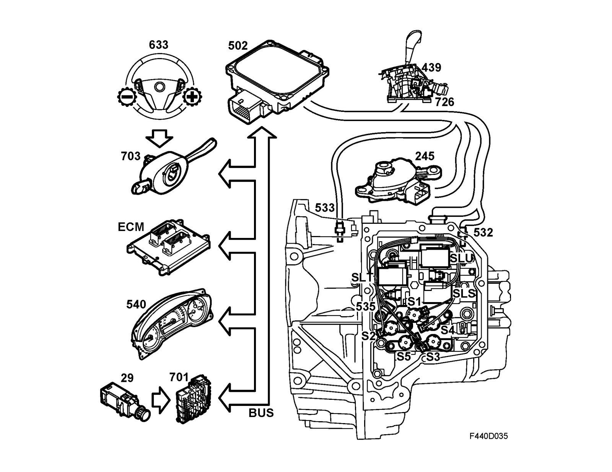

System Overview
System overview
1. Gear selector position sensor(245)
2. Main instrument unit (540)
3. Trionic T8 control module (589)
4. SID
5. TCM control module (502)
6. Output shaft speed sensor (533)
7. Input shaft speed sensor (532)
8. Transmission fluid temperature sensor (535)
9. Main fuse box 701
10. Brake light switch (29)
11. Oil pressure solenoid, SLU 531
12. Shift solenoid S1 531
13. Shift solenoid S2 531
14. Shift solenoid S3 531
15. Shift solenoid S4 531
16. Shift solenoid S5 531
17. System pressure solenoid, SLT
18. Oil pressure solenoid, SLS
19. Shift lever module SLM (726)
20. Switch unit, steering wheel (633)
21. Column integration module (703)